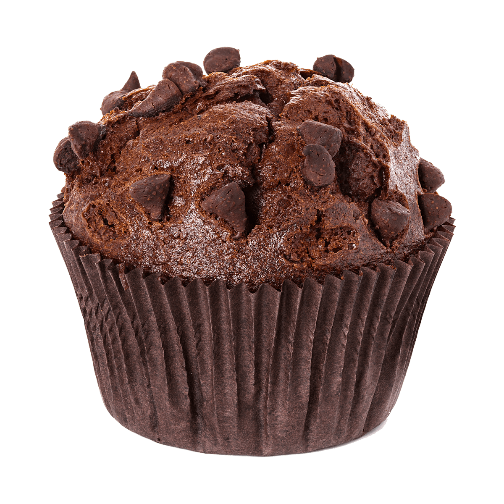

1/17/2024
My recipe webpageCrowd-Pleasing Cupcake Ready In Just 30Minutes

Cupcake is one of the best dessert.And this homemade cubcake will do just that.
A cupcake, fairy cake, or bun is a small cake designed to serve one person, which may be baked in a small thin paper or aluminum cup.
As with larger cakes, frosting and other cake decorations such as fruit and candy may be applied.
Ingredients
1. 100 g butter
2. 2/3 cup caster sugar
3. 1 tsp vanilla essence
4. 2 eggs (lightly beaten)
5. 1 cup self-raising
6. 1/3 cup cocoa (sifted)
7. 1/2 tsp bicarbonate
8. 1/2 cup milk
Directions
Preheat oven to 180°C (160°C fan-forced). Line cupcake tins with cases.
Using a mixer, cream butter, sugar and vanilla until creamy and fluffy. Gradually add eggs and mix until just combined.
Spoon mixture into liners until each case is one-third full. Bake for 15-20 minutes.
To make the chocolate butter cream icing, beat butter until light and fluffy. Add icing sugar and cocoa and combine well.
Beat in milk until mixture is fluffy.
Once the cupcakes have cooled, cover them with icing and enjoy.